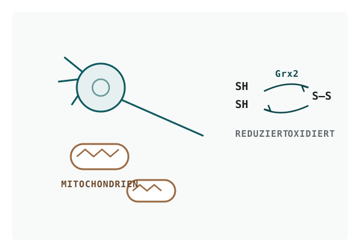

Forschungsfeld II · Neurobiochemie
Wie Redox-Zustände neurale Zellen steuern
In der Masterarbeit habe ich untersucht, wie redoxabhängige Zellprogramme die Entwicklung neuraler Zellen mitbestimmen — konkret die Rolle von Thiol-Disulfid-Oxidoreduktasen, allen voran Grx2, in der Differenzierung neuraler Stammzellen und Oligodendrozyten sowie in der mitochondrialen Funktion. Ausgelesen wurde das über Imaging, fluoreszenzbasierte Funktionsassays und Western Blot.

Der wissenschaftliche Hintergrund
Der Redox-Zustand einer Zelle — das Gleichgewicht zwischen oxidierenden und reduzierenden Bedingungen — ist mehr als nur „Stress ja oder nein". Er ist ein Steuersignal. Viele Proteine tragen an ihren Cystein-Resten reaktive Thiolgruppen (–SH), die reversibel zu Disulfidbrücken (–S–S–) oxidiert werden können. Dieser Schalter verändert Struktur und Aktivität des Proteins und wirkt so wie ein reversibler Ein-/Aus-Mechanismus.
Gesteuert wird dieser Schalter von Thiol-Disulfid-Oxidoreduktasen. Glutaredoxin 2 (Grx2) ist ein solches Enzym mit einem Schwerpunkt in den Mitochondrien — den Kraftwerken der Zelle. Die zentrale Frage der Arbeit: Wie greift dieses Redox-System in die Differenzierung neuraler Zellen ein? Also in den Prozess, in dem aus neuralen Stamm- und Vorläuferzellen spezialisierte Zelltypen werden — insbesondere Oligodendrozyten, die die Myelinscheiden der Nervenfasern bilden.
Redox-Regulation, mitochondriale Aktivität und Zelldifferenzierung sind dabei kein getrenntes Nebeneinander: Mitochondrien liefern Energie und Signale für die Differenzierung, und ihr Redox-Zustand entscheidet mit, welchen Weg eine Zelle einschlägt.
Was ich dort gemacht habe
Ich habe komplexe Zellmodelle aufgebaut und mit funktionellen Auslesungen untersucht, wie sich Grx2 und verwandte Redox-Systeme auf Differenzierung, Myelinisierung und mitochondriale Funktion auswirken:
- Zellmodelle: neurale Stamm- und Vorläuferzellen (NSPCs), Oligodendrozyten-Vorläufer (OPCs), Neuronen, Co-Kulturen sowie iPSC-abgeleitete Modelle.
- Funktionelle Readouts: Marker für Differenzierung, Myelinisierung und synaptische Reifung.
- Fluoreszenz- und Imaging-Assays: mitochondriales Membranpotenzial (MitoID), Calciumsignale (Fura-2AM) und reaktive Sauerstoffspezies (MitoSOX), dazu Immunocytochemistry und konfokale Mikroskopie.
- Redox-Analytik: indirekter Redox-Shift mit NEM/TCEP/mmPEG, um den Oxidationszustand von Thiolen sichtbar zu machen; Western Blot (LI-COR Odyssey).
Ergebnisseitig lieferte die Arbeit quantitative Hinweise auf Grx2-abhängige Effekte auf die Reifung von Oligodendrozyten und auf das mitochondriale Membranpotenzial — inklusive klar dokumentierter Grenzen der getesteten Bedingungen, positiver wie negativer Befunde.
Zwei Momente, die die Arbeitsweise zeigen
Zwei Situationen aus dieser Zeit beschreiben besser als jede Methodenliste, wie ich arbeite:
Ein Antikörper zeigte ein Signal, das zu schön war. Statt es zu übernehmen, habe ich die unspezifische Bindung durch systematisches Gegentesten und die visuelle Mustererkennung im Mikroskopbild identifiziert — und das Signal entsprechend eingeordnet, statt es als Befund zu verkaufen.
Schlüsselmethoden
- Zellbiologie: Primärzellkultur, Stammzell- und Differenzierungsmodelle, Co-Kulturen, iPSC-Modelle.
- Imaging: Immunocytochemistry, Konfokal- und Fluoreszenzmikroskopie, Bildanalyse mit Fiji/ImageJ.
- Funktionsassays: MitoID (Membranpotenzial), Fura-2AM (Ca²⁺), MitoSOX (ROS).
- Biochemie: SDS-PAGE, Western Blot (LI-COR Odyssey), indirekter Redox-Shift (NEM/TCEP/mmPEG).
- Auswertung: quantitative Analyse und Statistik (GraphPad Prism).
Warum das hier steht
Dieses Feld steht für Forschungsreife in komplexen Systemen: viele Zelltypen, viele Auslesungen, viele Fehlerquellen — und die Disziplin, positive wie negative Ergebnisse sauber zu trennen und zu dokumentieren. Genau diese Trennung zwischen „sieht gut aus" und „hält der Kontrolle stand" ist das, was ich heute in Datenprozessen als Validierung vor dem Schreiben wiederfinde.